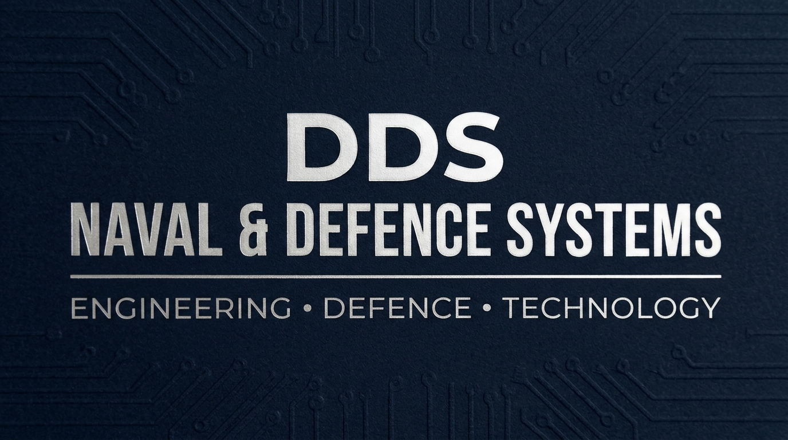

SYSTEMS ENGINEERING
Ingeniería, integración, análisis y gestión de sistemas navales y plataformas de defensa.

NAVAL ENGINEERING / SYSTEMS / DEFENCE
Ingeniería naval aplicada a sistemas de defensa, mantenimiento, fiabilidad, automatización y tecnologías emergentes.
TECHNICAL CAPABILITIES
Ingeniería, integración, análisis y gestión de sistemas navales y plataformas de defensa.
Mantenimiento, fiabilidad, análisis de fallos y optimización del ciclo de vida de sistemas.
Automatización, sistemas embebidos, electrónica, programación y tecnologías aplicadas a ingeniería.
PROFESSIONAL PROFILE
Ingeniero naval y oceánico por la universidad politécnica de Cartagena (España), especializado en ingeniería de sistemas, mantenimiento y fiabilidad de plataformas navales y sistemas de defensa.
Experiencia en la prestación de servicios de soporte técnico en entornos multidisciplinares de ingeniería, producción, calidad, sistemas, mantenimiento y modernización de sistemas navales, colaborando con compañías de referencia como Navantia y Baleària.
PROFESSIONAL EXPERIENCE
Aporto experiencia en gestión de proyectos, programación del mantenimiento, gestión de repuestos,estudios de fiabilidad, análisis de fallos,gestión de obsolescencia y apoyo al ciclo de vida del porducto. Integración de sistemas navales y de defensa, verificación y validación (V&V), pruebas FAT, HAT y SAT, junto con coordinación multidisciplinar y control documental.
ENGINEERING PROJECTS
Programas navales, ingeniería de sistemas, generación de energía, mantenimiento y modernización de plataformas de defensa.
Diseño funcional, fabricación, montaje y apoyo al ciclo de vida.
Ingeniería de sistemas y apoyo al ciclo de vida de la planta de generación de energía mediante sistema AIP.
Ingeniería de sistemas y apoyo al ciclo de vida del buque.
Ingeniería de sistemas y apoyo al ciclo de vida del buque.
Mantenimientos preventivos y correctivos de diferentes sistemas de defensa naval.